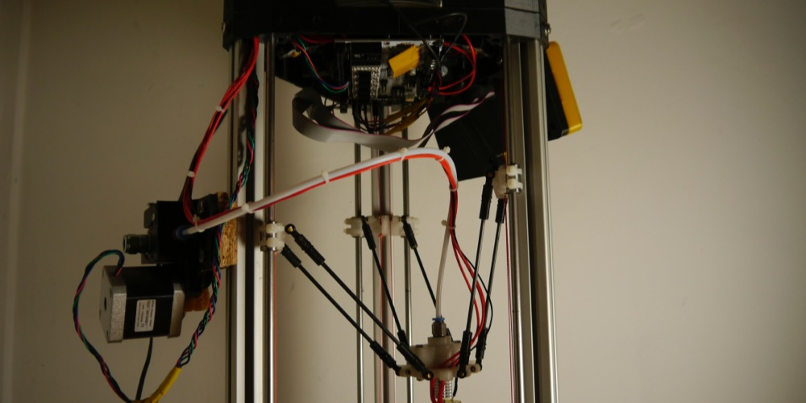
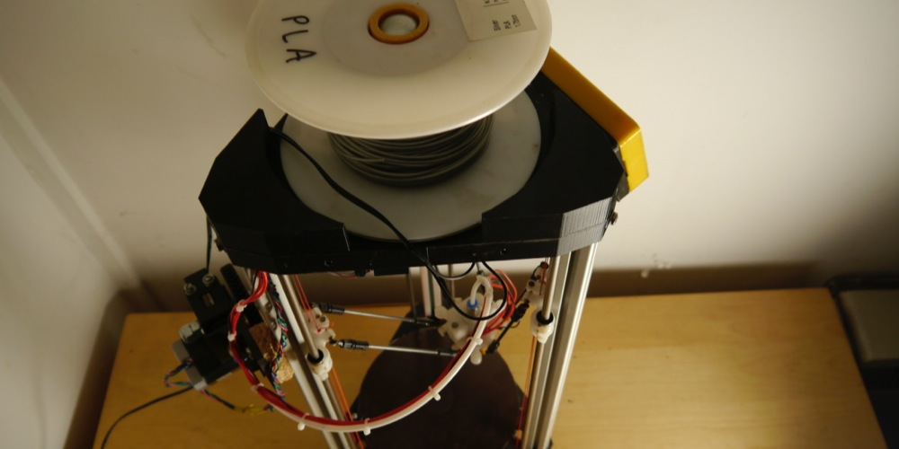
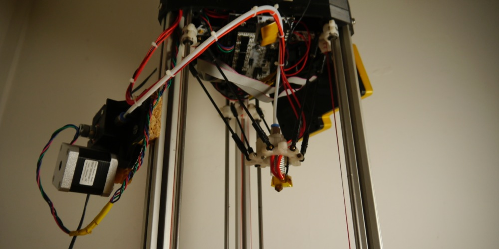

3d printing - 3DR printer
I though having a 3d printer in my studio would certainly be a useful addition to my tools. It would allow me to more easily bridge the gap between digital and physical prototyping. I had heard of the RepRap community. They where based around an Internet forum, which as a shining example of open source development slowly moved closer to perfecting the design of 3d printers through sharing ideas and building on those of others.
I spent a while browsing the forums trying to decide which of the many designs I would prefer to build. Eventually I settled on a newly released revision of the delta type printer. I ordered some parts from china, and started designing my own plastic parts for the structure. My problem of course was that all of the RepRap printers are designed to themselves be printed. As I didn't yet have access to a 3d printer this was a problem for me. I needed to find someone who had a printer.
To my complete amazement while watching a YouTube video of the chap who had designed the printer I wanted to build I he mentioned he was affiliated with a company in Stroud, Stroud is where I live! I thought this was too much of a coincidence not to make contact so I emailed him and he suggested meeting up and offered to print me some parts to get me started. It was great to meet the RichRap and talk about the future of 3d printing. He has a brilliant blog, with detailed instructions on how to build setup and calibrate his 3DR printer.
